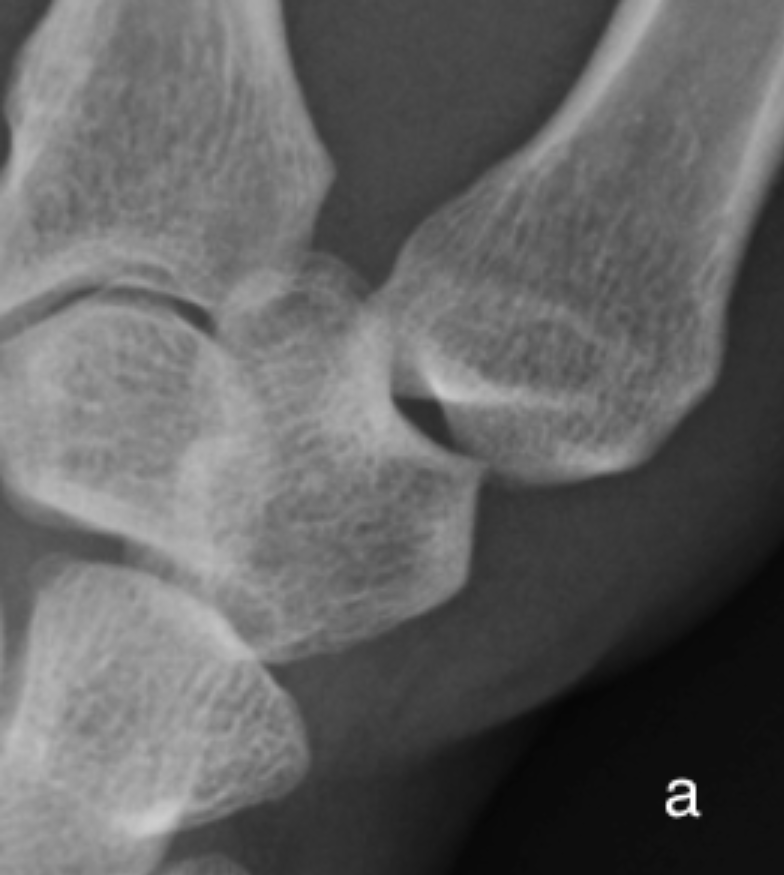
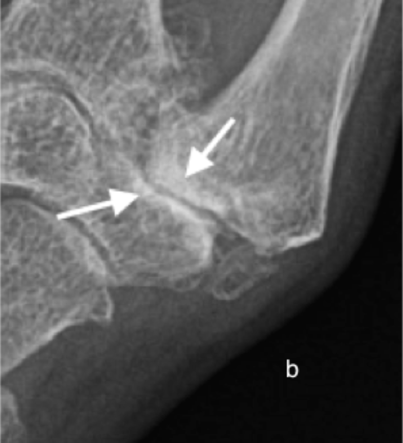

Subchondral Sclerosis
- The subchondral region is located deep to the subchondral bone plate which separates it from the articular cartilage.
- When this cartilage is damaged or lost as in osteoarthritis the subchondral bone is directly exposed to stresses across the joint with subsequent trabecular collapse and flattening, appearing ivory like with a polished surface termed eburnation and appearing as subchondral sclerosis on x-ray.
- Subchondral sclerosis is a region of increased bone density and thus appears on radiographs as an ill-defined region of dense bone (white) with a graduated return to normal bone density as one extends away from the joint
Subchondral sclerosis, eburnation, on both sides of the 1st CMC in this patient with osteoarthritis

(a) A normal 1st CMC is shown for comparison

(b) Note joint space loss and intra-articular loose ossified bodies (avulsed osteophytes)